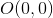
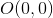
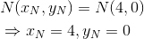

Exerciții și probleme rezolvate de tip Bac pentru profilul tehnologic
- Această problemă a fost dată în modelul de subiect al anului 2013, pentru profilul tehnologic, la Subiectul I, exercițiul 5.
Bacalaureat Matematică 2013 | Tehnologic | Model de subiect | Subiectul I
În reperul cartezian  se consideră punctele
se consideră punctele  și
și  . Determinați coordonatele mijlocului segmentului
. Determinați coordonatele mijlocului segmentului  .
.
Notăm cu  mijlocul segmentului .
mijlocul segmentului .


Așadar, mijlocul segmentului are coordonatele: 
- Această problemă a fost dată în sesiunea august - septembrie a anului 2013, pentru profilul tehnologic, la Subiectul I, exercițiul 5.
Bacalaureat Matematică 2013 | Tehnologic | Sesiunea august - septembrie | Subiectul I
În reperul cartezian  se consideră punctele
se consideră punctele  și
și  . Calculați distanța de la punctul
. Calculați distanța de la punctul  la punctul
la punctul  .
.


- Această problemă a fost dată în sesiunea specială a anului 2013, pentru profilul tehnologic, la Subiectul I, exercițiul 5.
Bacalaureat Matematică 2013 | Tehnologic | Sesiunea specială | Subiectul I
În reperul cartezian  se consideră punctele
se consideră punctele  și
și  Determinați coordonatele mijlocului segmentului
Determinați coordonatele mijlocului segmentului 
Fie  mijlocul segmentului Atunci coordonatele lui sunt:
mijlocul segmentului Atunci coordonatele lui sunt:


Coordonatele mijlocului segmentului  sunt
sunt  și
și  .
.
- Această problemă a fost dată în modelul de subiect al anului 2014, pentru profilul tehnologic, la Subiectul I, exercițiul 5.
Bacalaureat Matematică 2014 | Tehnologic | Model de subiect | Subiectul I
În reperul cartezian  se consideră punctele
se consideră punctele  și
și  Determinați coordonatele punctului
Determinați coordonatele punctului  știind că
știind că  este mijlocul segmentului
este mijlocul segmentului 
Fie mijlocul segmentului De aici putem afla coordonatele punctului , în funcție de coordonatele punctelor  și
și 


Dar se cunosc coordonatele punctului  de unde ne rezultă că putem afla coordonatele punctului
de unde ne rezultă că putem afla coordonatele punctului 
Cum  , avem:
, avem:

Cum  , obținem:
, obținem:

Așadar, avem punctul 
- Această problemă a fost dată în sesiunea august - septembrie a anului 2014, pentru profilul tehnologic, la Subiectul I, exercițiul 5.
Bacalaureat Matematică 2014 | Tehnologic | Sesiunea august - septembrie | Subiectul I
În sistemul cartezian  se consideră punctele
se consideră punctele  ,
,  și
și  . Determinați perimetrul triunghiului
. Determinați perimetrul triunghiului  .
.


 .
.
- Această problemă a fost dată în sesiunea specială a anului 2014, pentru profilul tehnologic, la Subiectul I, exercițiul 5.
Bacalaureat Matematică 2014 | Tehnologic | Sesiunea specială | Subiectul I
În reperul cartezian  se consideră punctele
se consideră punctele  ,
,  și
și  . Arătați că triunghiul
. Arătați că triunghiul  este dreptunghic.
este dreptunghic.
Aflăm, pe rând, lungimile laturilor triunghiului , adică segmentele  ,
,  și, respectiv,
și, respectiv,  .
.
![\begin{align*} & AB=\sqrt{(x_B-x_A)^2+(y_B-y_A)^2}\\&=\sqrt{(2-5)^2+(6-6)^2}\\&=\sqrt{(-3)^2+0^2}\\ &=\sqrt{9+0}\\&=\sqrt{9}\\&=3 \\ & BC=\sqrt{(x_C-x_B)^2+(y_C-y_B)^2}\\&=\sqrt{(5-2)^2+(2-6)^2}\\&=\sqrt{3^2+4^2}\\&=\sqrt{9+16}\\&=\sqrt{25}\\&=5 \\& AC=\sqrt{(x_C-x_A)^2+(y_C-y_A)^2}\\&=\sqrt{(5-5)^2+(2-6)^2}\\&=\sqrt{0^2+(-4)^2}\\&=\sqrt{16}\\&=4 \\ & AC^2= 4^2 =16 \\ & BC^2=5^2=25 \\ & AB^2=3^2=9 \\& \Rightarrow BC^2=AC^2+AB^2 \\ &\Leftrightarrow 25=16+9\\ &\Leftrightarrow 25=25 (A) \end{align*}](https://media.liceunet.ro/files/webbooks/images/229/equations/KxDH9jdz3ZwQxv12OVgm2g==.gif)
Am aplicat reciproca Teoremei lui Pitagora în triunghiului .
În concluzie,  este dreptunghic.
este dreptunghic.
- Această problemă a fost dată în sesiunea iunie - iulie a anului 2015, pentru profilul tehnologic, la Subiectul I, exercițiul 5.
Bacalaureat Matematică 2015 | Tehnologic | Sesiunea iunie - iulie | Subiectul I
În reperul cartezian  se consideră punctele
se consideră punctele  și
și  . Determinați coordonatele mijlocului segmentului
. Determinați coordonatele mijlocului segmentului  .
.
Fie  mijlocul segmentului . Coordonatele mijlocului sunt:
mijlocul segmentului . Coordonatele mijlocului sunt:

- Această problemă a fost dată în sesiunea specială a anului 2015, pentru profilul tehnologic, la Subiectul I, exercițiul 5.
Bacalaureat Matematică 2015 | Tehnologic | Sesiunea specială | Subiectul I
În reperul cartezian  se consideră punctele ,
se consideră punctele ,  și . Arătați că triunghiul este isoscel.
și . Arătați că triunghiul este isoscel.

Calculăm  .
.


Calculăm  .
.


Calculăm 


Cum , ne rezultă că este isoscel.
Vrei să rezolvi în plus și alte probleme de tip Bac în care apar elemente de geometrie? Atunci, te sfătuim să accesezi unul dintre eBook-urile următoare, Subiectul I, problema 5:
Bacalaureat Matematică 2012 | Științele naturii și Tehnologic | Sesiunea specială | Subiectul I
Bacalaureat Matematică 2012 | Științele naturii și Tehnologic | Model de subiect | Subiectul I
Bacalaureat Matematică 2012 | Științele naturii și Tehnologic | Sesiunea iunie - iulie | Subiectul I
Bacalaureat Matematică 2013 | Tehnologic | Sesiunea iunie - iulie | Subiectul I
Bacalaureat Matematică 2014 | Tehnologic | Sesiunea iunie - iulie | Subiectul I
Bacalaureat Matematică 2015 | Tehnologic | Sesiunea august - septembrie | Subiectul I
Bacalaureat Matematică 2016 | Tehnologic | Model de subiect | Subiectul I